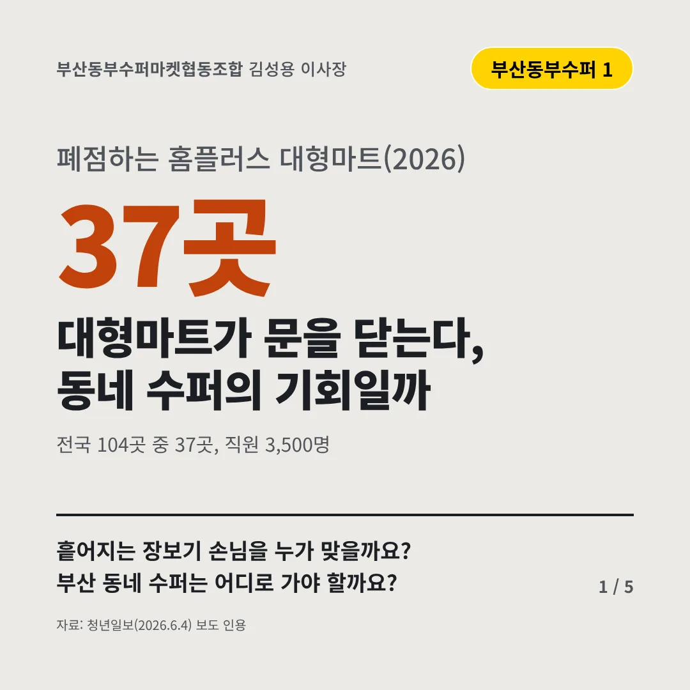
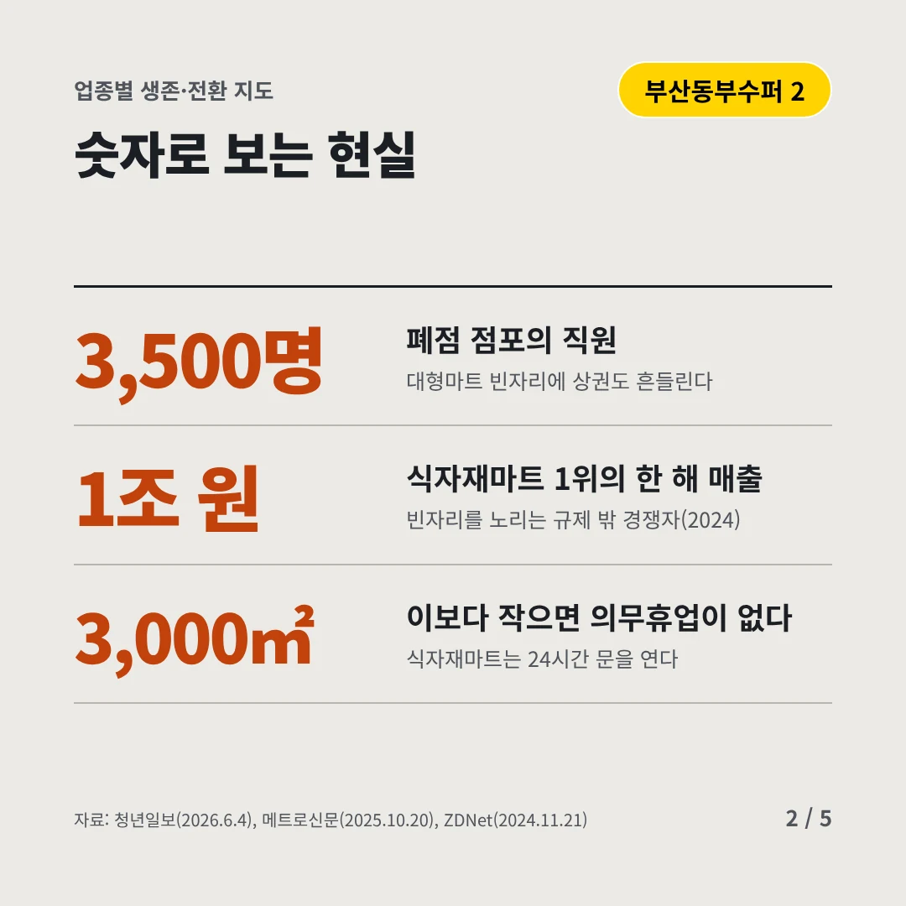
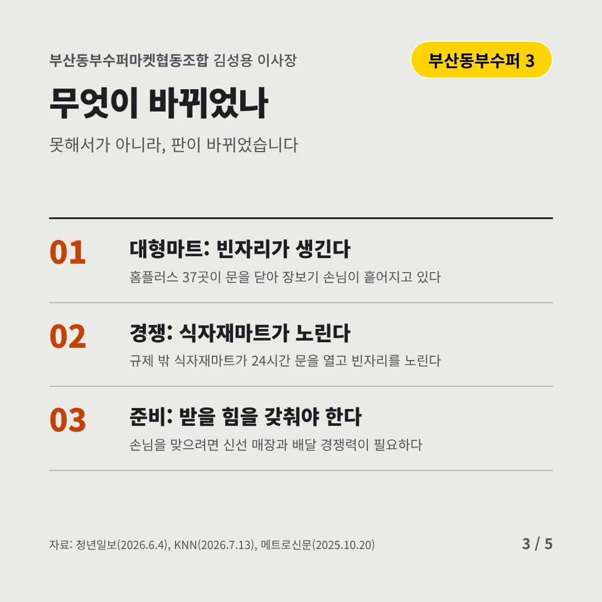
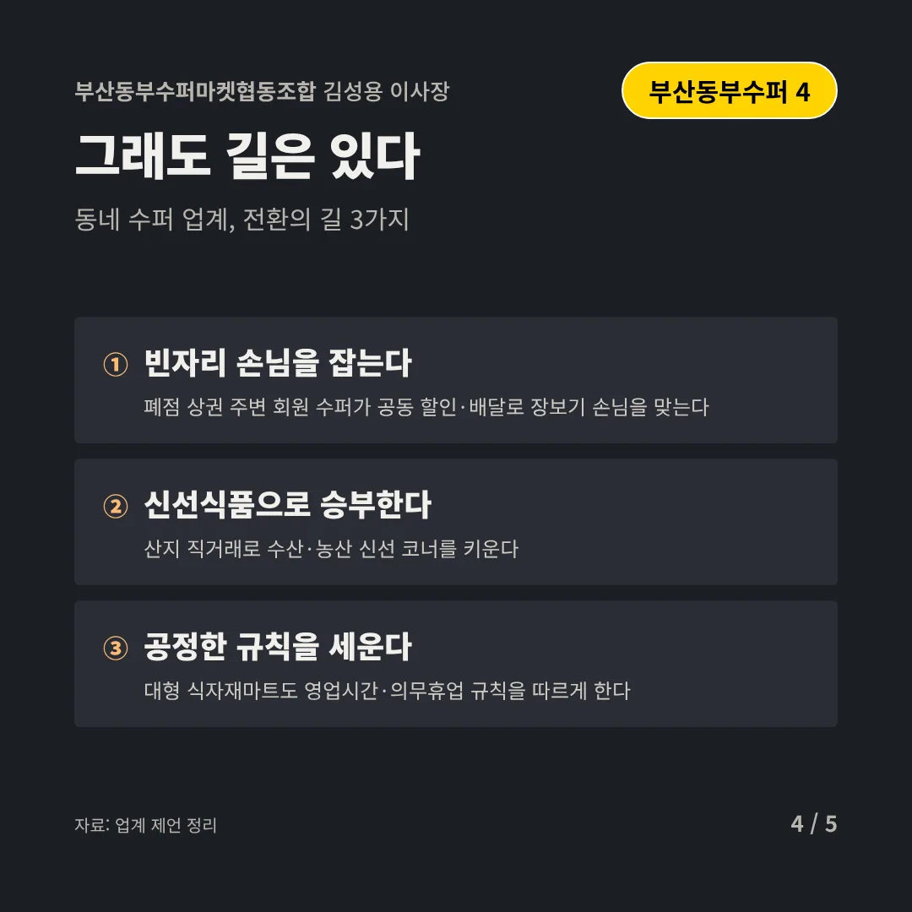
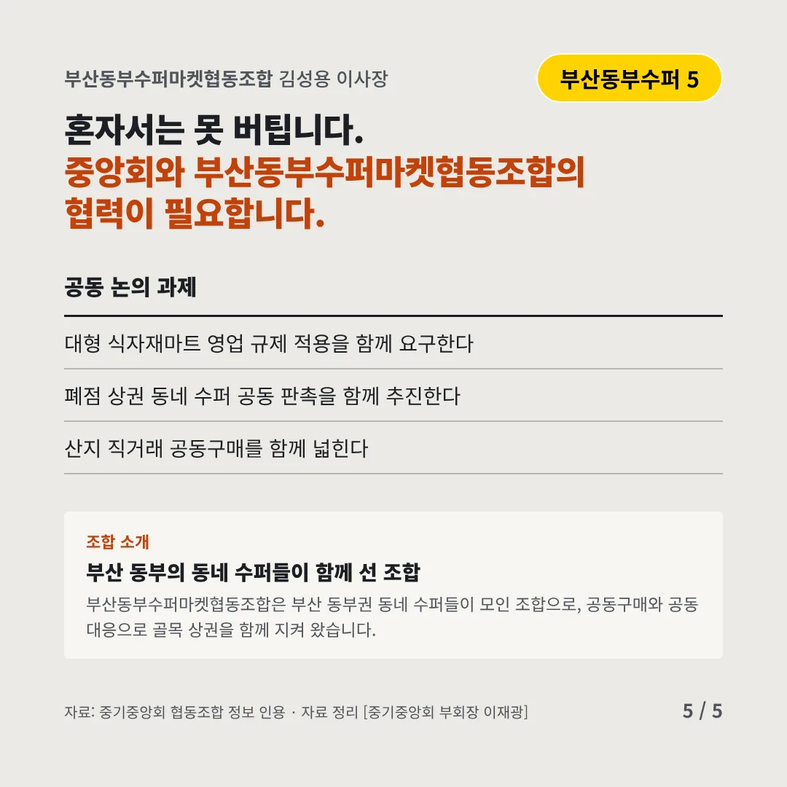
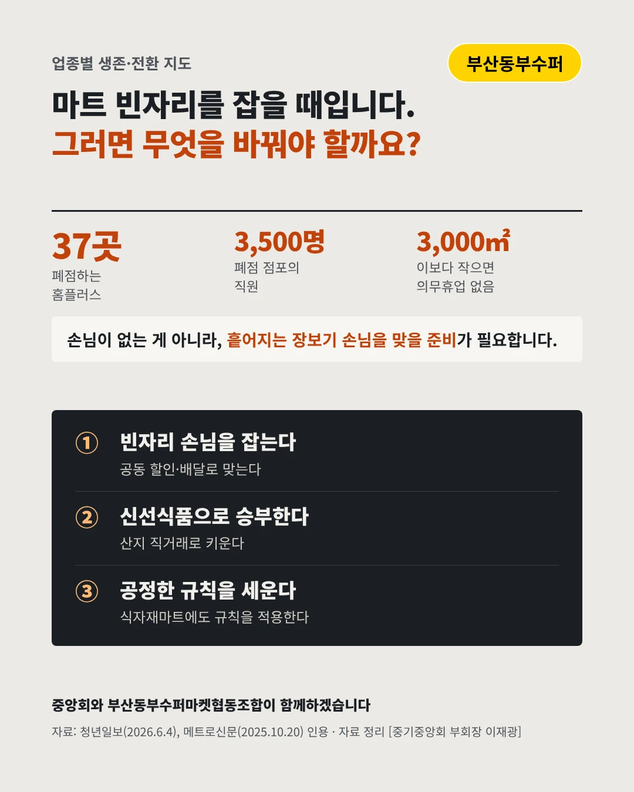

부산동부수퍼마켓협동조합
대형마트가 문을 닫는다, 동네 수퍼의 기회일까
37곳 폐점하는 홈플러스 대형마트(2026)






흩어지는 장보기 손님을 누가 맞을까요? 부산 동네 수퍼는 어디로 가야 할까요?
숫자로 보는 현실
- 3,500명폐점 점포의 직원대형마트 빈자리에 상권도 흔들린다
- 1조 원식자재마트 1위의 한 해 매출빈자리를 노리는 규제 밖 경쟁자(2024)
- 3,000㎡이보다 작으면 의무휴업이 없다식자재마트는 24시간 문을 연다
무엇이 바뀌었나
- 대형마트: 빈자리가 생긴다홈플러스 37곳이 문을 닫아 장보기 손님이 흩어지고 있다
- 경쟁: 식자재마트가 노린다규제 밖 식자재마트가 24시간 문을 열고 빈자리를 노린다
- 준비: 받을 힘을 갖춰야 한다손님을 맞으려면 신선 매장과 배달 경쟁력이 필요하다
그래도 길은 있다
- 빈자리 손님을 잡는다폐점 상권 주변 회원 수퍼가 공동 할인·배달로 장보기 손님을 맞는다
- 신선식품으로 승부한다산지 직거래로 수산·농산 신선 코너를 키운다
- 공정한 규칙을 세운다대형 식자재마트도 영업시간·의무휴업 규칙을 따르게 한다
한 장 요약

조합 소개
부산동부수퍼마켓협동조합은 부산 동부권 동네 수퍼들이 모인 조합으로, 공동구매와 공동 대응으로 골목 상권을 함께 지켜 왔습니다.
자료: 청년일보(2026.6.4), 메트로신문(2025.10.20), ZDNet(2024.11.21), KNN(2026.7.13)